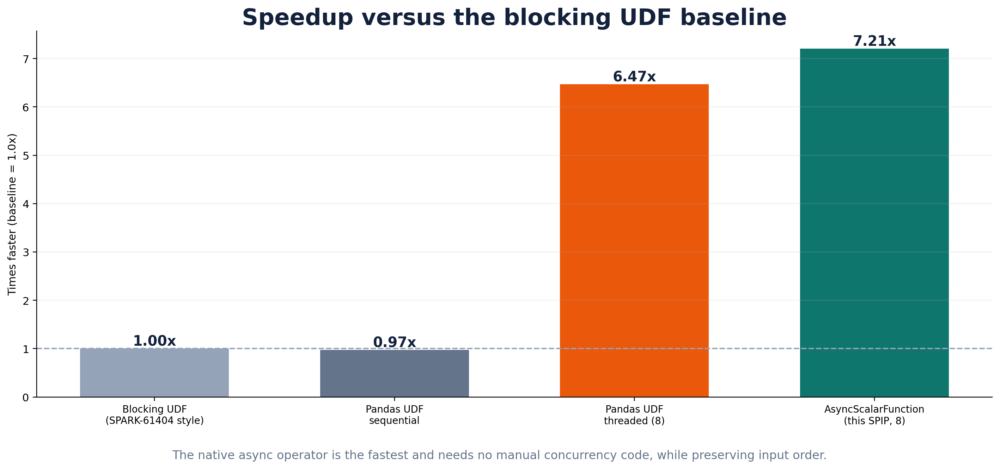
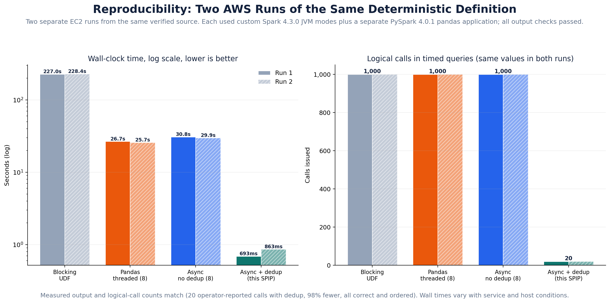
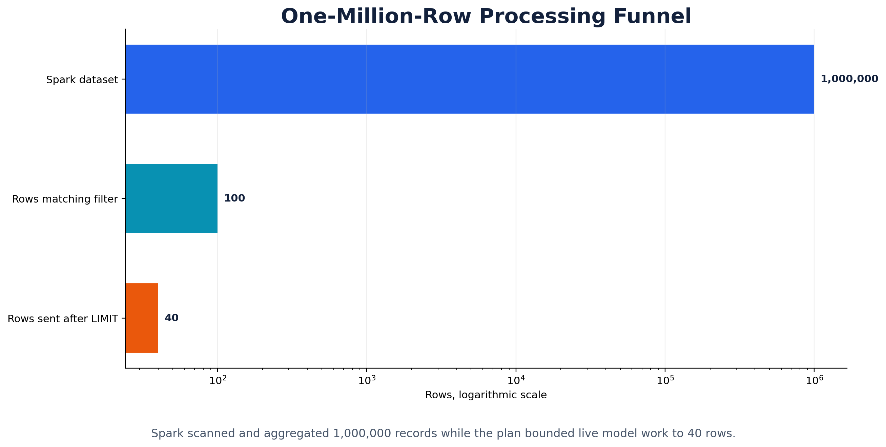
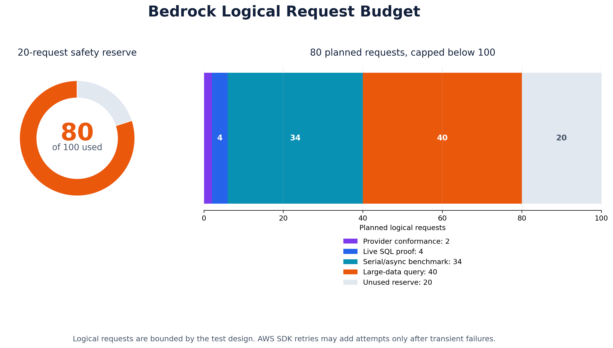
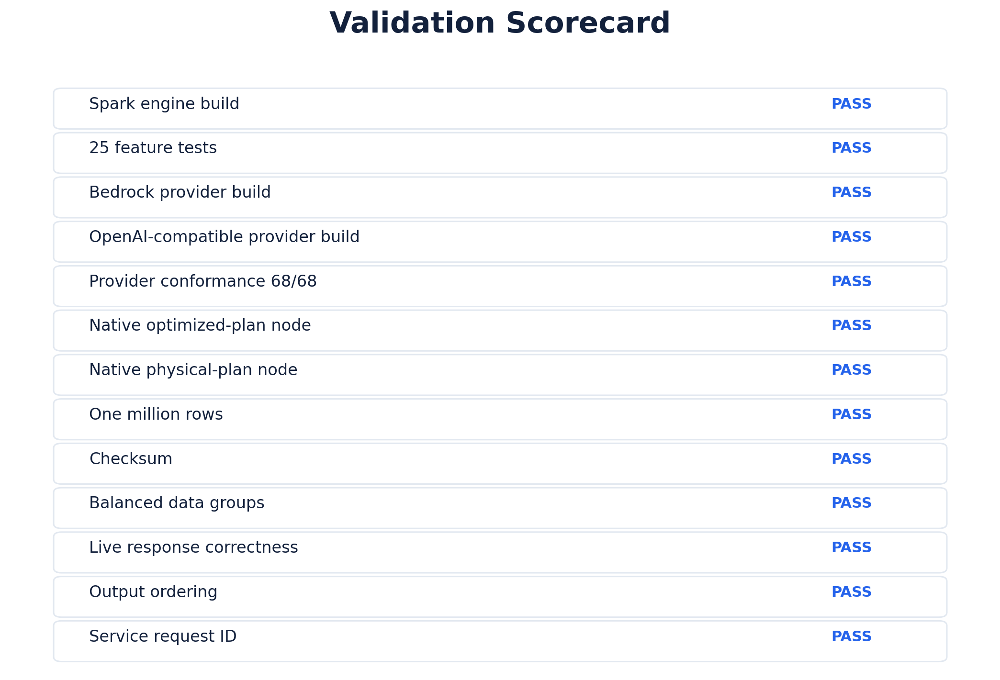

All required validation stages passed
The uploaded full Spark source built on a temporary non-production EC2 instance. All 25 focused async-engine tests passed, both provider modules built, native Spark SQL called Bedrock, and the one-million-row experiment returned every selected result correctly and in order.

Benefits and strengths
The evidence supports these advantages of the SPARK-61672 approach.
6.59x faster
Overlapping in-flight calls cut the same Bedrock workload from 4,350 ms to 660 ms with identical model, prompts, and partitioning.
Native Spark operator
AI calls run as EvalAsyncFunctions and AsyncEval inside the optimizer and planner, not as a bolt-on UDF.
Correct and ordered
Every response was correct and in input order in both the serial and eight-in-flight runs, so speed did not cost accuracy.
Scales with the query
Spark processed 1,000,000 rows while filter and LIMIT shrank model-facing work to 40, so AI cost tracks the query, not raw data size.
Provider-neutral
One SPI powers both Amazon Bedrock and an OpenAI-compatible module. Switching providers is configuration, not a rewrite.
Validated POC controls
67 executed AWS provider validations plus one intentional live-skip marker covered allowlists, limits, retry, circuit breaking, cancellation, and sanitized provider-call errors.
No secrets in code
The Bedrock path used the EC2 instance role through the AWS SDK default chain. No key, secret, or token appears in source or configuration.
Bounded original-run budget
The first validation planned 80 logical Bedrock requests under an approved cap of 100. Later benchmark sections state their own evidence and boundaries.
Measured and portable
The original 8-vCPU validation peaked near 4.8 GiB. Later comparisons used additional temporary hosts. This report is self-contained for any browser.
In-task call deduplication
Two engine changes strengthen the operator, validated at one-million-row scale against live Bedrock.
spark.sql.asyncFunction.deduplicateCalls=true, at most deduplicateMaxEntries argument keys per function/task are cached. Matches share the first future; keys first seen after saturation are not cached. Off by default because result sharing changes generative-call semantics.| Mode | Logical provider calls in timed query | Reused from cache | Wall time | Correct | Ordered |
|---|---|---|---|---|---|
| Deduplication OFF (default) | 1,000 | 0 | 32,034 ms | 1000/1000 | Yes |
| Deduplication ON (opt-in) | 20 | 980 | 823 ms | 1000/1000 | Yes |

Four modes across three implementation families
The JVM modes and corrected pandas rerun used the same EC2 instance, model, region, prompt definition, and single task. The first pandas orchestration failed before measurement; the corrected pandas-only rerun on that host produced the table. Every mode returned 120 of 120 correct answers in input order.
| Approach | Concurrency | Wall time | Throughput | Speedup | Manual concurrency code | Order guaranteed |
|---|---|---|---|---|---|---|
| Blocking scalar UDF (SPARK-61404 style) | 1 | 28,560 ms | 4.20 rows/s | 1.00x | No | Serial only |
| Pandas UDF, sequential | 1 | 29,360 ms | 4.09 rows/s | 0.97x | No | Yes |
| Pandas UDF, threaded pool of 8 | 8 | 4,416 ms | 27.17 rows/s | 6.47x | Yes, user-written | Yes |
| AsyncScalarFunction (this SPIP) | 8 | 3,963 ms | 30.28 rows/s | 7.21x | No | Yes, by the engine |


One-million-row benchmark on one host
Two Spark applications regenerated the same deterministic 1,000,000-row definition and prompt mapping on one EC2 instance. JVM modes used the custom Spark 4.3.0 build; pandas used released PySpark 4.0.1. Each produced 1,000 timed output rows across 20 prompt values. They share the host, data definition, model, region, and checks, but not one materialized DataFrame or one Spark version.
| Approach | In flight | Logical calls or timed rows | Rows reused | Wall time | Throughput | Correct | Ordered |
|---|---|---|---|---|---|---|---|
| Blocking scalar UDF (SPARK-61404 style) | 1 | 1,000 | 0 | 227,049 ms | 4.40 rows/s | 1000/1000 | Yes |
| Pandas UDF, threaded pool of 8 | 8 | 1,000 | 0 | 26,714 ms | 37.43 rows/s | 1000/1000 | Yes |
| AsyncScalarFunction, dedup off | 8 | 1,000 | 0 | 30,755 ms | 32.52 rows/s | 1000/1000 | Yes |
| AsyncScalarFunction, dedup on | 8 | 20 | 980 | 693 ms | 1443.00 rows/s | 1000/1000 | Yes |

The operator needs no user-written concurrency loop, preserves partition-local child-row order, runs in the JVM, and enforces a static per-operator, per-task-partition active-call ceiling that a session cannot change.
Reproducibility: two independent runs
The unified benchmark was run twice, on two separate EC2 instances, each with a clean build from the same SHA-256-verified source archive against live Amazon Bedrock. The second run is independent evidence, not a re-report of the first.
| Approach | Run 1 wall | Run 2 wall | Run 1 throughput | Run 2 throughput | Logical calls or timed rows | Correct and ordered |
|---|---|---|---|---|---|---|
| Blocking scalar UDF | 227,049 ms | 228,413 ms | 4.40 rows/s | 4.38 rows/s | 1,000 | 1000/1000 both |
| Pandas UDF, threaded pool of 8 | 26,714 ms | 25,742 ms | 37.43 rows/s | 38.85 rows/s | 1,000 | 1000/1000 both |
| AsyncScalarFunction, dedup off | 30,755 ms | 29,878 ms | 32.52 rows/s | 33.47 rows/s | 1,000 | 1000/1000 both |
| AsyncScalarFunction, dedup on | 693 ms | 863 ms | 1443.00 rows/s | 1158.75 rows/s | 20 | 1000/1000 both |

mapInArrow plus asyncio: direct Python comparison
Benchmark 6 directly compared a representative mapInArrow plus asyncio implementation with a threaded pandas UDF on one EC2 host under released PySpark 4.0.1. Both regenerated the same deterministic definition, used eight concurrent calls, and returned 1000/1000 correct rows in ORDER BY id output.
| Direct same-host mode | Concurrency | Timed wall time | Observed throughput | Correct and ordered |
|---|---|---|---|---|
| mapInArrow + asyncio | 8 | 24,799 ms | 40.32 rows/s | 1000/1000 |
| Pandas UDF, threaded pool of 8 | 8 | 26,835 ms | 37.26 rows/s | 1000/1000 |

calls=1000 field is inferred from timed input rows, not a server-side request counter. A different host measured native async without reuse at 30,755 ms (32.52 rows/s); that cross-run value is context, not a controlled ranking.The supported conclusion is that both user-written Python implementations overlap remote latency successfully. Native async measurements are in the same broad range and add a SQL/JVM path, partition-local ordered row association, and a static per-operator, per-task-partition ceiling. A controlled ranking requires every mode on the same host, Spark build, and protocol, with repeated trials.
Architecture validated end to end
The analyzer resolved the public provider-neutral SPI. The optimizer extracted remote calls and placed ordinary relational work below the async node. The planner emitted the new physical operator, which bounded in-flight work and restored input order.
Optimized plan
Sort [ordinal ASC NULLS FIRST], true
+- Project [ordinal, asyncFunc AS answer]
+- EvalAsyncFunctions [generate(prompt)], [asyncFunc]
+- LocalRelation [ordinal, prompt]
Physical plan
+- AsyncEval [generate(prompt)], [asyncFunc]
+- LocalTableScan [ordinal, prompt]What was added and where
Eight modified Spark files
| File | Purpose |
|---|---|
hadoop-cloud/pom.xml | Test-only Catalyst test-JAR dependency |
sql/catalyst/src/main/scala/org/apache/spark/sql/catalyst/analysis/FunctionResolution.scala | Resolve V2 AsyncScalarFunction |
sql/catalyst/src/main/scala/org/apache/spark/sql/catalyst/optimizer/Optimizer.scala | Safe filter and LIMIT placement |
sql/catalyst/src/main/scala/org/apache/spark/sql/catalyst/trees/TreePatterns.scala | Async tree patterns |
sql/catalyst/src/main/scala/org/apache/spark/sql/internal/SQLConf.scala | Concurrency and reorder controls |
sql/core/src/main/scala/org/apache/spark/sql/execution/SparkOptimizer.scala | Register extraction rules |
sql/core/src/main/scala/org/apache/spark/sql/execution/SparkPlanner.scala | Register async planning strategy |
sql/core/src/main/scala/org/apache/spark/sql/execution/SparkStrategies.scala | Plan AsyncEvalExec |
Nine new engine and test files
| File | Purpose |
|---|---|
sql/catalyst/src/main/java/org/apache/spark/sql/connector/catalog/functions/AsyncScalarFunction.java | Public provider-neutral future-returning SPI |
sql/catalyst/src/main/scala/org/apache/spark/sql/catalyst/expressions/ApplyAsyncFunctionExpression.scala | Unevaluable async expression and identity |
sql/catalyst/src/main/scala/org/apache/spark/sql/catalyst/plans/logical/asyncFunctionLogicalOperators.scala | EvalAsyncFunctions logical node |
sql/core/src/main/scala/org/apache/spark/sql/execution/async/AsyncEvalExec.scala | Bounded, ordered, spillable, cancellable operator |
sql/core/src/main/scala/org/apache/spark/sql/execution/async/ExtractAsyncFunctions.scala | Innermost-first and aggregate-aware extraction |
sql/core/src/test/scala/org/apache/spark/sql/execution/async/AsyncFunctionEndToEndSuite.scala | Six end-to-end cases |
sql/core/src/test/scala/org/apache/spark/sql/execution/async/AiQueryParitySuite.scala | Seven provider-envelope and error-policy cases |
sql/core/src/test/scala/org/apache/spark/sql/execution/async/AsyncFunctionSafetySuite.scala | Twelve safety and optimizer cases |
hadoop-cloud/src/test/scala/org/apache/spark/sql/execution/async/BedrockLiveAsyncFunctionSuite.scala | Live Bedrock SQL test path |
Validation package
The authoritative Spark and POC inventory remains spark-4.3.0/SPARK-61672/ALL-CHANGED-FILES.md. Deployment artifacts remain outside the Apache Spark repository.
Configuration and credential ownership
spark.sql.catalog.bedrock.*Catalog, model, region, and lower per-session limits.
spark.ai.bedrock.*Allowlists and ceilings a session cannot widen.
spark.sql.asyncFunction.*Only
maxInFlightCeiling is static. Reorder, polling, and bounded task-cache settings are session configurations within validated ranges.Exact Bedrock configuration used
SparkSession.builder()
.master("local[8]")
.config("spark.sql.catalog.bedrock",
"org.apache.spark.sql.ai.bedrock.BedrockFunctionCatalog")
.config("spark.sql.catalog.bedrock.region", "us-east-1")
.config("spark.sql.catalog.bedrock.modelId", "amazon.nova-micro-v1:0")
.config("spark.sql.catalog.bedrock.maxTokens", "16")
.config("spark.sql.catalog.bedrock.maxInFlight", "8")
.config("spark.ai.bedrock.allowedModels", "amazon.nova-micro-v1:0")
.config("spark.ai.bedrock.allowedRegions", "us-east-1")
.config("spark.ai.bedrock.maxTokens", "32")
.config("spark.sql.asyncFunction.maxInFlightCeiling", "8")
.config("spark.sql.asyncFunction.reorderWindow", "32")
.config("spark.speculation", "false")
.config("spark.task.maxFailures", "1")
.config("spark.sql.shuffle.partitions", "32")Credentials
The provider calls DefaultCredentialsProvider.builder().build(). On EC2, the AWS SDK obtained temporary credentials from the instance role through IMDSv2. Sessions cannot supply credentials through catalog options. No access key, secret key, profile name, or bearer token was embedded in source or Spark configuration.
spark.ai.openai.credentialEnv. A short-lived bearer token belongs only in that environment variable. The external OpenAI-compatible live test was skipped because no approved token was available.Temporary AWS controls
| Compute | Amazon Linux 2023, m7i.2xlarge, 8 vCPU, 30 GiB visible RAM |
|---|---|
| Storage | 150 GiB encrypted gp3, delete on termination |
| Network | No inbound security-group rules; Systems Manager only |
| Identity | Dedicated temporary EC2 role, no static instance key |
| Bedrock | InvokeModel limited to amazon.nova-micro-v1:0 in us-east-1 |
| Java | Amazon Corretto 17.0.21 |
| AWS CLI | 2.38.0 on the EC2 host |
| S3 | Exact source-object read and validation-prefix read/write |
How to run
A. Local build and 25 engine tests, no AWS
$env:SPARK_61672_JAVA_HOME = 'C:\path\to\jdk-17'
$env:SPARK_61672_MAVEN = 'C:\path\to\mvn.cmd'
$env:SPARK_61672_HADOOP_HOME = 'C:\path\to\hadoop'
powershell -ExecutionPolicy Bypass -File SPARK-61672\preflight.ps1
powershell -ExecutionPolicy Bypass -File SPARK-61672\run-poc.ps1B. Local live Bedrock proof
$env:AWS_PROFILE = '<approved-temporary-profile>'
$env:SPARK_TEST_BEDROCK_REGION = 'us-east-1'
$env:SPARK_TEST_BEDROCK_MODEL_ID = 'amazon.nova-micro-v1:0'
powershell -ExecutionPolicy Bypass -File SPARK-61672\preflight.ps1 -CheckAws
powershell -ExecutionPolicy Bypass -File SPARK-61672\run-poc.ps1 `
-SkipSparkBuild -SkipEngineTests -LiveC. AWS EC2 validation
- Place the full-source ZIP in private, encrypted S3 storage.
- Create an EC2 role from the included trust and runtime policy templates. Restrict the source key, result prefix, region, and model.
- Launch Amazon Linux 2023 with encrypted delete-on-termination storage, IMDSv2, no inbound rules, and Systems Manager.
- Set a unique result prefix and update the instance IDs in the SSM command documents.
- Upload the runners, validation POM, and Scala harness to the private input prefix.
- Run
ssm-run-command.json, thenssm-conformance-command.json. - Download and verify evidence before deleting temporary resources.
Build commands executed on EC2
./build/mvn -f pom.xml \
-pl sql/catalyst,sql/core -am install -DskipTests \
-Dmaven.scaladoc.skip=true -Dmaven.javadoc.skip=true
./build/mvn -f pom.xml \
-pl sql/core -am test \
-DwildcardSuites=org.apache.spark.sql.execution.async -Dtest=none
./build/mvn -f SPARK-61672/spark-implementation/connector/ai-bedrock/pom.xml \
install -DskipTests
./build/mvn -f SPARK-61672/spark-implementation/connector/ai-openai/pom.xml \
install -DskipTestsOperational portability fixes used by the successful runner
- Normalize CRLF in
build/mvn, shell helpers, andbuild/spark-build-info. - Run Maven from the extracted Spark root so checkstyle resolves relative configuration.
- Skip generated Scala and Java documentation during validation builds.
- Use Java 17 module-open options for standalone validation entry points.
Experiments and benchmark results
End-to-end stage ledger
| Stage | Duration | Result | Finished UTC |
|---|---|---|---|
| System Packages | 1 s | PASS | 2026-11-17T00:29:57Z |
| Source Download | 1 s | PASS | 2026-11-17T00:29:58Z |
| Source Extract | 0 s | PASS | 2026-11-17T00:29:58Z |
| Spark Engine Install | 598 s | PASS | 2026-11-17T00:39:56Z |
| Spark Engine Tests | 542 s | PASS | 2026-11-17T00:48:58Z |
| Bedrock Provider Install | 13 s | PASS | 2026-11-17T00:49:11Z |
| Openai Provider Install | 7 s | PASS | 2026-11-17T00:49:18Z |
| Validation Harness Build | 9 s | PASS | 2026-11-17T00:49:28Z |
| Live Spark Sql Proof | 8 s | PASS | 2026-11-17T00:49:36Z |
| Live Throughput Benchmark | 11 s | PASS | 2026-11-17T00:49:47Z |
| Large Dataset Validation | 10 s | PASS | 2026-11-17T00:49:57Z |
| Provider Conformance | 37 s | PASS | 2026-11-17T01:04:30Z |

Real Bedrock concurrency benchmark
| Mode | In flight | Wall time | Throughput | Correct | Ordered |
|---|---|---|---|---|---|
| Serial control | 1 | 4,350 ms | 3.68 rows/s | 16/16 | Yes |
| Async engine | 8 | 660 ms | 24.24 rows/s | 16/16 | Yes |
| Measured change | 6.59x faster | 6.59x | All | Yes |

One-million-row data design
IDs 0 through 999,999 were generated over 32 partitions. Five star groups contained 200,000 rows each. Every ID divisible by 97 produced a NULL review. The ID checksum had to equal 499,999,500,000.


Machine-readable metrics
| Metric | Value | Unit | Status |
|---|---|---|---|
| Dataset Rows | 1,000,000 | rows | PASS |
| Dataset Partitions | 32 | partitions | PASS |
| Materialize Elapsed Ms | 3,867 | ms | PASS |
| Aggregate Elapsed Ms | 415 | ms | PASS |
| Id Checksum | 499,999,500,000 | sum | PASS |
| Null Review Rows | 10,310 | rows | PASS |
| Balanced Star Groups | 5 | groups | PASS |
| Candidate Rows Before Limit | 100 | rows | PASS |
| Optimized Has Async Node | True | boolean | PASS |
| Executed Has Async Node | True | boolean | PASS |
| Plan Has Limit | True | boolean | PASS |
| Plan Has Filter | True | boolean | PASS |
| Live Logical Requests | 40 | requests | PASS |
| Live Elapsed Ms | 2,482 | ms | PASS |
| Live Rows Per Second | 16.1160 | rows per second | PASS |
| Live Correct Rows | 40 | rows | PASS |
| Live Ordered Rows | True | boolean | PASS |
Live result sample
| ID | Model answer | Status |
|---|---|---|
| 4 | ID-4 | PASS |
| 10004 | ID-10004 | PASS |
| 20004 | ID-20004 | PASS |
| 30004 | ID-30004 | PASS |
| 40004 | ID-40004 | PASS |
| 50004 | ID-50004 | PASS |
| 60004 | ID-60004 | PASS |
| 70004 | ID-70004 | PASS |
| 80004 | ID-80004 | PASS |
| 90004 | ID-90004 | PASS |
Logical request budget

Resource footprint

Scorecard

Conformance details
The harness reported 68 passing entries and zero failures. One entry is the explicit successful skip marker for the OpenAI-compatible external live path. The remaining 67 entries exercised behavior or safety checks, including live Bedrock.
Show all 68 harness entries
- ✓credentialEnv cannot be set from a catalog option (cluster-only)
- ✓session can lower but not raise maxResponseBytes above the cluster ceiling
- ✓session cannot disable a cluster rate ceiling or raise it
- ✓breaker policy options from a session are ignored (cluster-only)
- ✓garbage numeric option fails without echoing the value
- ✓loopback exemption is host-exact, not prefix-matched
- ✓baseUrl with user info is rejected
- ✓DESCRIBE text does not expose the endpoint URL
- ✓allowlist rejects an unapproved base URL
- ✓allowlist rejects an unapproved model
- ✓plain http is rejected off loopback
- ✓empty allowlist blocks the catalog entirely
- ✓requested concurrency is clamped to the static ceiling
- ✓bound function is nondeterministic and has a stable canonical name
- ✓catalog lists exactly the three forms
- ✓bind rejects a non-string argument
- ✓success parses choices[0].message.content
- ✓prompt with quotes, backslashes and newlines round-trips through Jackson
- ✓NULL input returns NULL without a call (verified by the server request counter)
- ✓gzip response is decoded
- ✓decoded size cap rejects an oversized plain response
- ✓decoded size cap rejects an oversized gzip response (decoded, not compressed, size)
- ✓a response under the cap still succeeds
- ✓chunked response with no Content-Length is aborted at the cap while streaming
- ✓chunked response under the cap succeeds
- ✓429 with Retry-After seconds is retried and then succeeds
- ✓Retry-After parser handles delay-seconds, HTTP-date, and garbage
- ✓429 with Retry-After HTTP-date is retried and then succeeds
- ✓retries stop at maxAttempts
- ✓absolute deadline stops retries before maxAttempts
- ✓request timeout surfaces TIMEOUT and does not hang
- ✓400 is terminal BAD_REQUEST and is not retried
- ✓404 is terminal BAD_REQUEST
- ✓403 is terminal AUTH
- ✓malformed envelope is SCHEMA
- ✓non-JSON body is SCHEMA
- ✓no error path in any form leaks the prompt, token, URL, or provider body
- ✓generate_status throws (does not return a struct) on a fatal AUTH error
- ✓try_generate turns a row-level error into NULL
- ✓try_generate still fails fatally on AUTH
- ✓generate_status returns a populated SUCCESS struct
- ✓generate_status returns an ERROR struct with code, safe message, attempts and request id
- ✓generate_status reports attempts after a retry
- ✓generate_status NULL input is SKIPPED_NULL_INPUT with zero attempts
- ✓cancelling the result aborts the in-flight HTTP exchange (server sees the write fail)
- ✓cancelling during retry backoff sends no further request (deterministic Retry-After)
- ✓each attempt is bounded end to end: a trickled body cannot exceed the attempt budget
- ✓a trickled BODY is cut off at the attempt budget and the exchange is aborted
- ✓rejected pacer callers do not burn slots or trip the breaker
- ✓circuit breaker opens after consecutive endpoint failures and reports CIRCUIT_OPEN
- ✓a second catalog with different tuning shares the same open breaker
- ✓CIRCUIT_OPEN is reported, not fatal, in the tolerant forms
- ✓after the reset window exactly one probe is admitted, and its failure re-opens
- ✓a late outcome from a call admitted before the trip cannot close the breaker
- ✓breaker ignores cancellation and client-side 400s (does not open)
- ✓over-cap 5xx body is classified by status (retryable), not as RESPONSE_TOO_LARGE
- ✓pacer spaces requests at the configured rate (sequential)
- ✓a session rate limit does not slow a different catalog on the same endpoint
- ✓a cluster rate ceiling applies to every catalog and a session cannot lift it
- ✓varying per-call tuning does not create new clients or threads
- ✓pacer and breaker are safe under 32 concurrent callers
- ✓bedrock allowlist rejects an unapproved model and region
- ✓bedrock concurrency is clamped to the static ceiling
- ✓bedrock SDK exceptions map to stable codes with row-level vs fatal split
- ✓LIVE openai-compatible cases (set SPARK_TEST_LIVE_OPENAI_BASE_URL and AI_PROVIDER_TOKEN) [skipped]
- ✓LIVE bedrock: generate through BedrockFunctionCatalog returns the model text
- ✓LIVE bedrock: generate_status populates request_id
- ✓LIVE bedrock: NULL input makes no call
Evidence catalog
The original evidence catalog below covers the first validation run. Later benchmark evidence is retained separately under benchmark3/evidence through benchmark6/evidence. This HTML embeds all 14 charts as base64 data and has no network dependency.
Show evidence files, sizes, and SHA-256 prefixes
| File | Purpose | Size | SHA-256 prefix |
|---|---|---|---|
bedrock-provider-install-resources.txt | GNU time resource measurements for this stage | 918 B | 74d248f83640056d... |
bedrock-provider-install.log | Bedrock provider build | 314.3 KiB | 28f094677940b88a... |
environment.txt | Operating system, CPU, memory, disk, Java, AWS CLI, and instance evidence | 4.5 KiB | e87d8054ca9770cf... |
final-cleanup-verification.txt | Read-only verification that temporary instances, security groups, IAM role, and profile are absent | 447 B | 39df67729712fb64... |
final-summary.txt | Machine-readable final outcome and request budget | 296 B | 61171805a6192ba2... |
large-dataset-metrics.csv | Machine-readable one-million-row metrics | 644 B | 0caa4abeb117a35e... |
large-dataset-validation-resources.txt | GNU time resource measurements for this stage | 20.3 KiB | 278a90a143bd39f3... |
large-dataset-validation.log | Large-data plan, metrics, samples, and outcome | 7.4 KiB | 4cec3592755f7063... |
live-spark-sql-proof-resources.txt | GNU time resource measurements for this stage | 20.3 KiB | 01053f6192d5ddd6... |
live-spark-sql-proof.log | Native plans, model results, NULL handling, pushdown, and request ID | 6.0 KiB | 4b4efa427cf5a825... |
live-throughput-benchmark-resources.txt | GNU time resource measurements for this stage | 20.3 KiB | 0e07fda0fa011441... |
live-throughput-benchmark.log | Serial versus async benchmark | 4.9 KiB | 2a56a2b9b7e461c0... |
openai-provider-install-resources.txt | GNU time resource measurements for this stage | 915 B | 9df8386b6285c384... |
openai-provider-install.log | OpenAI-compatible provider build | 3.0 KiB | c2ae1f553c0ebc28... |
orchestration.log | Main stage progression | 1.2 KiB | 8bc2e0e7df289c11... |
overall-status.txt | Main orchestration exit status | 46 B | 46d04d3a080b9e30... |
provider-conformance-build.log | Supporting validation evidence | 2.2 KiB | ffd993736cfb4a7e... |
provider-conformance-resources.txt | GNU time resource measurements for this stage | 20.3 KiB | 793fe39973bf08e1... |
provider-conformance.log | Provider safety and behavior results | 4.5 KiB | e2140afc6cd3b7c5... |
source-checksum.txt | Full-source ZIP SHA-256 verification | 54 B | de1d51c91207fd1b... |
source-download-resources.txt | GNU time resource measurements for this stage | 924 B | 89c96018a7df5aa6... |
source-download.log | Supporting validation evidence | 0 B | e3b0c44298fc1c14... |
source-extract-resources.txt | GNU time resource measurements for this stage | 936 B | 045a092bccf3968e... |
source-extract.log | Supporting validation evidence | 41 B | 9f08536683a1099b... |
spark-engine-install-resources.txt | GNU time resource measurements for this stage | 959 B | b97d151fc1e6a44f... |
spark-engine-install.log | Custom Spark build output | 751.4 KiB | b2e2627a40c6d150... |
spark-engine-tests-resources.txt | GNU time resource measurements for this stage | 944 B | cd00bd3601bcb05c... |
spark-engine-tests.log | 25 focused engine-test results | 527.9 KiB | 1713d90849e84b83... |
spark-root.txt | Supporting validation evidence | 47 B | 37e83d74c7f87d26... |
stages.csv | Stage duration, exit code, and completion time | 608 B | 813a6cb766cd8b33... |
started-utc.txt | Supporting validation evidence | 21 B | 7587b5afb9726ac7... |
system-packages-resources.txt | GNU time resource measurements for this stage | 818 B | c7d145f020bbc391... |
system-packages.log | Supporting validation evidence | 683 B | 1cab02798426c353... |
validation-harness-build-resources.txt | GNU time resource measurements for this stage | 919 B | 08eccc401de6e123... |
validation-harness-build.log | Validation harness compilation | 143.2 KiB | 05e6295ceafda7a6... |
Source identity and final state
| Source ZIP SHA-256 | 0c61efecb30fcef70835205a108a4ffbe09e780dd986983905da5936e0146dbe |
|---|---|
| Successful run | 2026-11-17T00:29:56Z through 2026-11-17T01:04:30Z |
| Final marker | RESULT=ALL_CHECKS_PASSED |
| Private evidence | SPARK-61672/aws-validation/run-20261116/ |
No temporary compute remains
The retained final cleanup check found no active SPARK-61672-tagged instances.
The listed temporary security groups were absent.
The temporary IAM role and instance profile were absent.
Private S3 evidence and local reports were intentionally retained. No presigned URL or credential value is included here.
What this proves and what remains
Proven here
- Custom Spark 4.3.0 source builds on AWS.
- All 25 focused engine tests pass.
- Native logical and physical async plan nodes execute.
- Real Bedrock requests return correct, ordered results and a request ID.
- Async overlap reduced measured wall time by 6.59x.
- One million surrounding Spark rows can be processed while model work is bounded.
- Provider harness reports zero failures.
Still requires qualification
- Multi-node driver and executor deployment.
- Cross-executor request and rate ceilings.
- Executor-loss, stage-retry, and speculation behavior.
- Distributed dependency and role propagation.
- Multi-host cancellation and cleanup.
- Approved external OpenAI-compatible live endpoint.
- Broader Spark SQL regression coverage.